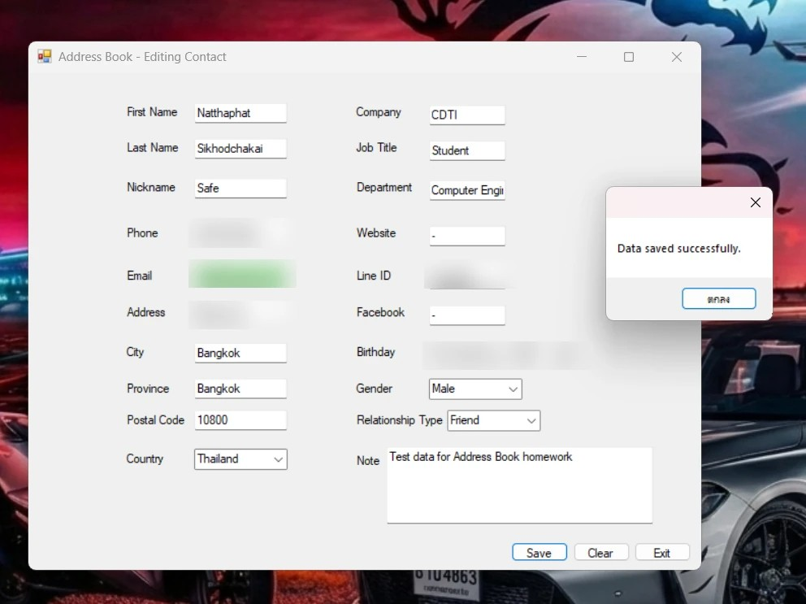
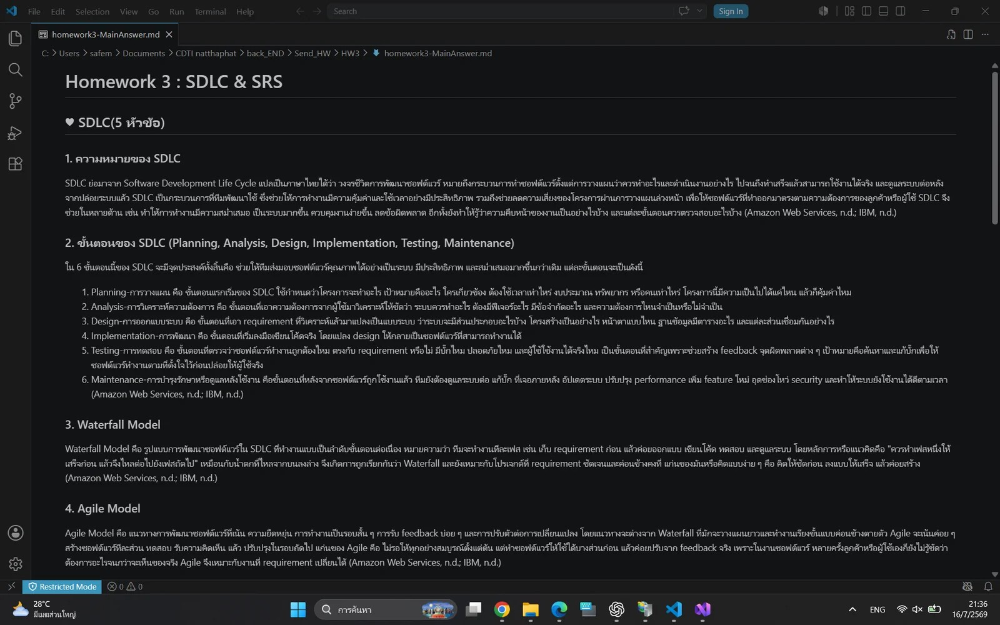
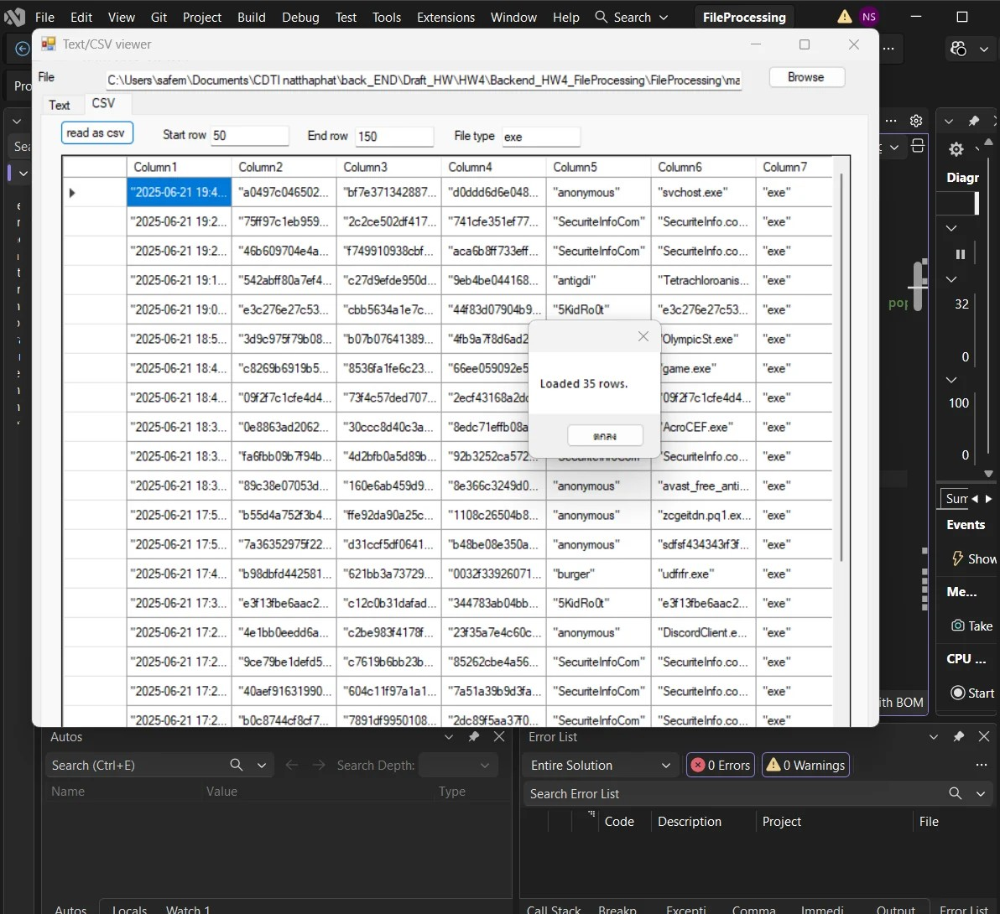
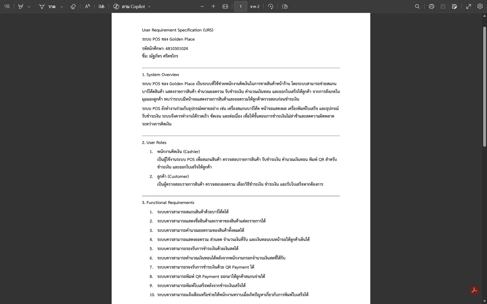
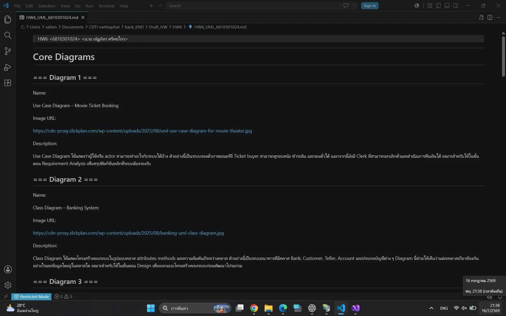
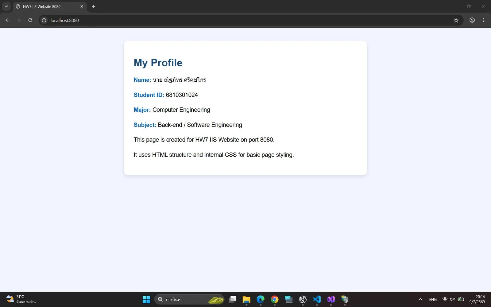

C# · WINDOWS FORMS · GUI
HW2: Address Book
โปรแกรมสมุดรายชื่อด้วย C# Windows Forms สำหรับบันทึกข้อมูลผู้ติดต่อและแสดงข้อความยืนยันเมื่อบันทึกสำเร็จ
PORTFOLIO / HOMEWORK
รวบรวมงานที่ได้ลงมือทำ พร้อมคำอธิบาย ปุ่มดู และดาวน์โหลด

C# · WINDOWS FORMS · GUI
โปรแกรมสมุดรายชื่อด้วย C# Windows Forms สำหรับบันทึกข้อมูลผู้ติดต่อและแสดงข้อความยืนยันเมื่อบันทึกสำเร็จ

SOFTWARE ENGINEERING · SDLC · SRS
รายงานสรุปวงจรการพัฒนาซอฟต์แวร์ โมเดล Waterfall และ Agile รวมถึงแนวคิดของ Software Requirements Specification

C# · FILE PROCESSING · CSV
โปรแกรมอ่านไฟล์ข้อความและ CSV ด้วย C# สามารถกำหนดช่วงแถวและกรองชนิดข้อมูลเพื่อแสดงผลในตาราง

REQUIREMENTS · URS · POS
เอกสารความต้องการผู้ใช้สำหรับระบบ POS ของ Golden Place ครอบคลุมภาพรวมระบบ บทบาทผู้ใช้ และ Functional Requirements

SOFTWARE DESIGN · UML
รวบรวมและอธิบาย UML Diagram จำนวน 13 ประเภท เพื่อแสดงมุมมองด้านโครงสร้าง พฤติกรรม และการติดตั้งระบบ

IIS · HTML · CSS · ASP.NET
เว็บไซต์สองชุดบน IIS ได้แก่ Static HTML/CSS ที่ port 8080 และ ASP.NET Server-side Page ที่ port 8081